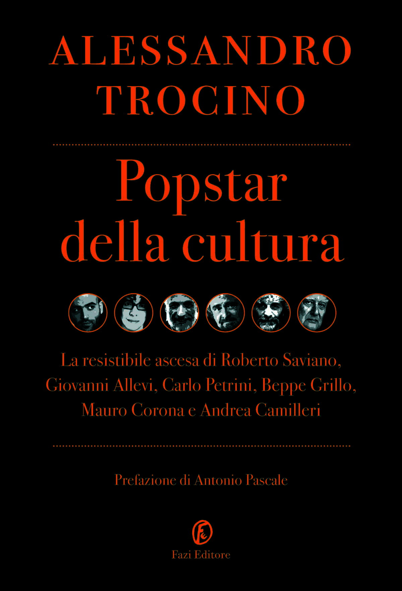
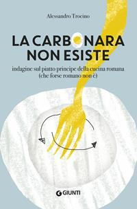

58:27 · 6 OPERE
La manna dal cielo per la gazzetteria.
Il filo del discorso
Dr Divago esamina il modo in cui la stampa rappresenta il dissenso attraverso una lettura polemica di un’intervista di Alessandro Trocino a Sergio Berlato, pubblicata nell’estate 2021. La sua tesi è che scegliere una voce eccentrica e presentarne le risposte in una certa cornice possa screditare un insieme molto più ampio di persone. Il discorso passa dalla pluralità delle opinioni alla distinzione fra critica e delegittimazione, con una digressione sui libri del giornalista. La lettura ravvicinata dell’intervista riguarda le etichette, le domande, la punteggiatura e il rapporto fra competenza e autorità. I riferimenti a scienziati, terapie e origine del virus restano dichiarazioni riportate e valutazioni del relatore: la loro presenza non costituisce una dimostrazione scientifica. Nella parte conclusiva Dr Divago accosta altri episodi di cronaca e denuncia gli effetti che attribuisce a un linguaggio ostile verso chi protesta. La scheda distingue le voci dell’intervistatore, dell’intervistato e del commentatore, conserva i riferimenti letterari identificabili e non presenta le accuse personali o le ipotesi di manipolazione come fatti accertati.
I libri nel discorso
Intervista a Sergio Berlato sui vaccini (28 luglio 2021)
Fotografia illustrativa · intervista giornalistica: Fotografia illustrativa di Sergio Berlato associata alla pagina dell’intervista. Non è una copertina libraria.
Fotografia associata alla pagina del Corriere; titolo della voce redazionale descrittivo, non riproduzione del titolo originale. Non è una copertina di libro.
Intervista di Alessandro Trocino a Sergio Berlato sul Corriere della Sera commentata estesamente; data riscontrata nella pagina originale.
Passaggio 7:00 ↗ · Fonti e libro ↗
Iliade
Identificazione probabile
Copertina: Einaudi · ET Classici · 2014
Copertina autentica dell’edizione di riferimento, controllata visivamente. Non identifica l’esemplare letto o citato nel video.
La formula infiniti lutti richiama probabilmente il proemio nella traduzione di Monti; titolo non pronunciato.
Passaggio 2:52 ↗ · Fonti e libro ↗Razza padana
Copertina: Copertina autentica BUR del volume cartaceo del 2008, ISBN 9788817026369, dall’archivio immagini Rizzoli. Entrambi gli autori sono leggibili. Non si attribuisce questa edizione al video.
Immagine autentica dell’opera, controllata visivamente; l’edizione di riferimento non è attribuita al filmato.
Razza padana e Trocino espliciti; la coautoria di Adalberto Signore è riscontrata nel catalogo editoriale.
Passaggio 20:41 ↗ · Fonti e libro ↗
Popstar della cultura. La resistibile ascesa di Roberto Saviano, Giovanni Allevi, Carlo Petrini, Beppe Grillo, Mauro Corona e Andrea Camilleri
Copertina: Copertina originale Fazi con titolo rosso e ritratti in bianco e nero, tratta dal catalogo dell’editore. Edizione 2011, ISBN 9788864111728; non identificata come esemplare del filmato.
Immagine autentica dell’opera, controllata visivamente; l’edizione di riferimento non è attribuita al filmato.
Popstar della cultura di Trocino esplicito.
Passaggio 20:52 ↗ · Fonti e libro ↗
La carbonara non esiste. Indagine sul piatto principe della cucina romana (che forse romano non è)
Copertina: Copertina autentica Giunti 2019, ISBN 9788809885042, con piatto bianco e forchetta gialla: immagine della scheda libraria corrispondente. Nessuna attribuzione della specifica edizione al video.
Immagine autentica dell’opera, controllata visivamente; l’edizione di riferimento non è attribuita al filmato.
La carbonara non esiste di Trocino esplicito.
Passaggio 21:24 ↗ · Fonti e libro ↗
Il mondo come volontà e rappresentazione
Copertina: Newton Compton · edizione di riferimento
Il mondo come volontà e rappresentazione di Schopenhauer esplicito.
Passaggio 22:37 ↗ · Fonti e libro ↗